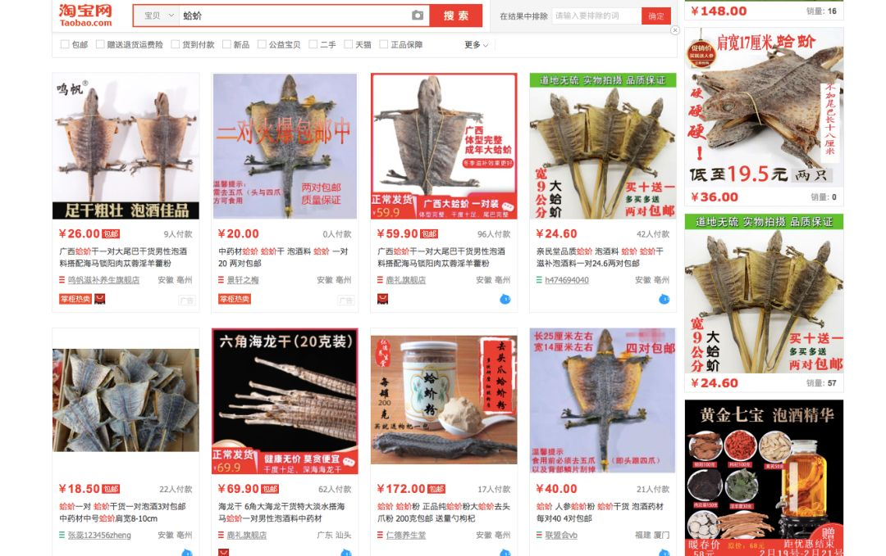

疫情之下，我们在上海的八十个探头，监测着城市野生动物
原文链接 备份链接 以下文章来源于自然测量员 ，作者王放 [自然测量员 自然测量员——丈量森林，触摸风雨，拍摄动物，讲讲漏洞百出的故事](#) 此时此刻，野生动物恐怕是一个敏感话题——一方面，不能吃、不能抓野生动物慢慢成为共识；另外一方 …

非典疫情以来，科学界和动物保护领域都在呼吁禁止野生动物交易，但以“野味”为代表，近年来交易渠道反而越来越广，从活鲜、农批市场扩大到快手、火山等网络平台，多种野生动物都有从捕猎、运输到贩卖的成熟利益网。问题出在哪里？如何有效整肃？能否引导消费者摒弃对野味的畸形消费偏好？
文 |《财经》记者 马霖
编辑 | 余乐
一斤野生蛇几百块，做出一锅蛇汤几千元；野生穿山甲一只几百块，穿山甲汤售价上万元。西北地区流行吃野生黄羊，卖一只黄羊就是当地人一个月的工资。
在快手上，盗猎者写一句隐晦的“高速收费站建好了”，意思是他们已经埋伏好猎夹、猎套；“已收费”的意思是“捕到猎物了”，懂的人自然懂。
安徽宣城、庐江等地，约十公里的山路边铺满了偷盗者私设的电网，江西、湖南、湖北的山里也铺电网，上面是被一万多伏的电网电死的麂子、野猪。有些动物的蹄子已经被电得卷起来。
浙江淳安县千岛湖， “野味”贩子在市场附近的马路上公开宰杀销售麂子、野猪，据说他们还持有合法证件。
新冠肺炎疫情蔓延，野生动物违法交易依然存在，网上仍有盗猎工具出售。
在深圳一家大酒楼里，打工者钟华平看到过标价昂贵的穿山甲。它们尾巴长长的，看到后厨的人走过去，会像小孩一样在笼子里找地方躲，紧张地缩成一团。
他还记得第一次看到一只活的穿山甲如何从生到死，成为酒楼食客盘中餐的场景。“后厨处理穿山甲，是用刀砸穿山甲的脑袋，一刀不行，就砸两刀，穿山甲被放血，开水烫，拔掉鳞片，直到露出白色的躯体。”
客人要点穿山甲，不会直接说，而是问有没有“地鼠”，因为穿山甲喜欢用爪子刨地。厨房的人曾鼓动他尝一块穿山甲肉，说现在不尝这辈子没机会了，钟华平吃了一口，内心的排斥让他生理上感到恶心，那次之后，他不想再吃第二口所谓“野味”。
2003年，非典疫情在钟华平的老家广东爆发。广东曾下令紧急扑杀病毒中间宿主果子狸，关闭可能滋生、传播病毒的野生动物交易市场。但疫情过去后，果子狸又回到了许多人的“野味”餐桌上。
非典疫情发生之后，科学界和动物保护领域都在呼吁禁止野生动物交易，但涵盖“野味”的野生动物交易并未偃旗息鼓，近年来交易渠道反而越来越广。从活鲜、农批市场扩大到快手、火山等网络平台上，各种野生动物都有从捕猎、运输到贩卖的成熟利益网。甚至新冠肺炎疫情当下，市场监管总局等三部委宣布至疫情解除禁止野生动物交易，此类交易还在进行，凸显了野生动物交易管理之难。
此次新冠肺炎疫情逼迫我们重新审视人与野生动物的关系。研究表明，与2003年的非典疫情一样，新冠病毒很有可能是源自人与野生动物非自然接触的人畜共患病毒，自然宿主也很可能同样是蝙蝠，而中间宿舍则初步判断为穿山甲。
钟华平觉得，新冠肺炎疫情是人类又一次在自己布下的陷阱中跌倒。
疫情背后的“野味”交易
在酒楼里，钟华平也看到过几百条蛇被关在逼仄的网袋里，几小时后，这些动物就会成为餐桌上的“野味宴”。这样的大酒楼通常有两个厨房，一个是普通厨房，一个是野味厨房，“这些动物不好处理，”野味厨房要开一个后门，方便把野生动物运进来或者把处理完的“垃圾”丢出去。
他知道做“野味”是灰色，甚至非法的，“同事处理蛇时被蛇分泌的毒液弄伤眼睛，去医院都不敢说自己是做野味弄伤的。”
“野味”是暴利生意，捕猎几乎零成本，偷盗来的野生动物从农村的盗猎者到贩子，再到酒楼、食客，价格可以翻很多倍。“一斤蛇几百块，做出一锅蛇汤几千，穿山甲一只几百块，穿山甲汤售价上万。”那时候他端盘子战战兢兢，生怕倒了蛇汤、穿山甲汤赔不起。“很多人都有用珍奇食材招待贵客的欲望，攀比心也在作祟，无论好不好吃，谁能吃得起贵的、稀有的，说明谁更有地位、有渠道。”钟华平说，做穿山甲这种国家二级保护动物的野味生意容易被查，因此酒楼主要做熟客生意，或者有人介绍，一个地区的酒楼之间相互认识，没有需求的野生动物会转卖给别的酒楼。
在内陆西北地区，非法盗猎和野味食用同样在一部人群中存在。西北某地流行吃野生黄羊，黄羊是国家二级保护动物。中卫野生动物保护志愿者李根山告诉《财经》记者，一斤黄羊卖60-90元，一只平均40斤，卖一只黄羊就是当地人一个月的工资，诱惑很大。黄羊一年只产一胎，前些年一群羊有近20只，现在一群羊只有五六只。“2000年初，中卫当地曾大张旗鼓开‘野味’餐厅，那几年是明着卖，这几年是暗着卖，吃爆炒黄羊、红烧黄羊肉，其实黄羊肉肉粗，并不好吃。”
除了所谓珍贵的野味，普通野生动物也是餐桌上的牺牲品。根据相关数据，在这张野味地图上，南方整体比北方食用得多，盗猎、销售则发生在全国各地。广东、广西、云南、福建、浙江、江西、安徽、四川、湖北、湖南、东北地区的野味消费更集中，野猪、麂子、果子狸、花面狸、斑鸠、青蛙、竹鼠、蛇、野鸡、野鸭、野鸟、豪猪、刺猬、雪豹、大雁等许多野生动物都会被盗猎销售。一些省份主要做野味的输出，比如在陕西和四川交界处，盗猎贩子抓了野生动物，多会运到四川的消费市场，比如麂子、毛冠鹿。
捕捉发生在山区、水边，贩子收来野生动物，拿到活鲜、农批市场去卖，餐厅从农批市场采购，或由贩子配送，往往在当地就能形成一条成熟的利益链。一些村民也吃野味，他们不太明白这些满地跑的动物为什么不应该吃。
广东饶平县开有大量野味餐厅，餐厅辟出屋子放置野生动物，笼子一层一层，“这些地方卫生条件都不好，熏的不行。”中国生物多样性保护与绿色发展基金会志愿者刘懿丹告诉《财经》记者。
刘懿丹曾去过佛山南海区一个水产批发市场，那里十几家销售野生动物的店挨着，笼子里关着豹猫、果子狸、鹭鸟、蛇、竹鼠等，屋子里除了账本，到处是蟑螂。她说，天津的王顶堤批发市场也长期售卖“野味”，一些酒楼里有野兔、野鸡、野鸭，和从东北收来的狍子。
新冠肺炎疫情当下，涉嫌违法的野生动物交易依然在进行。2月3日，云南大理祥云县森林公安局查获一只被非法捕猎的黄喉貂，属国家二级保护动物；2月13日，野保志愿者在湖北襄阳下属老河口市王莆洲水电站附近发现60多只非正常死亡的野生鸟类，警方在抓获的犯罪嫌疑人家中搜到了大量鸟尸体和疑似毒死野生动物的药品；疫情发生以来，安徽安溪县共发现涉及非法捕猎、无证养殖野生动物案件4起，涉及上百只滑鼠蛇、水律蛇、稚鸡等野生动物，野生动物制品33.3公斤；至今广西桂林仍有店在销售非法野味。
目前淘宝上仍有人在销售国家二级保护动物“大壁虎”（俗称蛤蚧、仙蟾）制成的干品，这些信息的真实性如何，若属实，究竟是野生捕捉还是人工养殖，是否有合法养殖及销售手续，尚待有关方面核查。此外，在京东、拼多多、闲鱼、转转、微店等平台还有人售卖野生动物标本和捕猎工具。

搜索“蛤蚧”，可以看到多个销售页面。蛤蚧就是国家二级保护动物大壁虎。来源：《财经》记者2月21日截图

至今仍开业的桂林“野味”餐厅及其菜单／受访者供图
短视频平台成新销售区
近几年的一个新变化是，短视频平台正成为野生动物交易新的重灾区。天将明是“让候鸟飞”野生动物保护组织工作人员，他在短视频App快手上时常看到有关盗猎的蛛丝马迹。
天将明告诉《财经》记者，在快手上，盗猎者很谨慎，不会发猎物的视频，而是让下好的猎夹露出一下，或者发一句“上山了”，拍一个山里的镜头，写一句隐晦的“高速收费站建好了”，意思实际上是野生动物从这里经过要收过路费，他们已经埋伏好猎夹、猎套；“已收费”的意思是“中货了、捕到猎物了”，他说，懂的人自然就懂。

快手上使用“暗语”的野生动物盗猎者页面 来源：《财经》记者2月21日截图
如今的盗猎工具也越来越先进，以前盗猎者下了猎夹、猎套，要自己时不时去看是否中了猎物，现在会用上报警器，猎物被夹到后，盗猎者的手机上能收到微信、短信和电话通知，这种报警器在一些电商平台上就有卖。
淘宝上销售的盗猎报警器，受访者表示，这种报警器并没有其他正规用途。／来源：《财经》记者2月21日截图
天津、河北一带抓小型林鸟的人不少。盗猎者清晨架捕鸟网，一天不收，广西、广东的盗猎者晚上抓水鸟，天快黑了放诱鸟机，用喇叭放各种鸟的叫声，架上捕鸟网，水鸟一听到声音哗哗哗就飞下来了。野保志愿者在安徽宣城、庐江查盗猎痕迹，十公里的山路边铺满了偷盗者设的电网，江西、湖南、湖北的山里也铺电网，上面是被一万多伏的电网电死的麂子、野猪，“这些动物的蹄子已经被电得卷起来。”刘懿丹说。
盗猎者有时很狡猾，反盗猎能力也很强。李根山和同伴一般是晚上八点出发去山里，抓黄羊盗猎团伙，当地有六七个盗猎团伙长期抓不住，“抓捕猎的人要凭消息、凭运气，山大沟深，车在山里跟蚂蚁一样。”他最近一次是大年初五进山，“只看见车辙印，不见车。”
李根山告诉《财经》记者，在中卫的大山里，盗猎者远远看到打击盗猎的志愿者，知道如何把黄羊扔到沟里埋好，等志愿者走后再取猎物。盗猎者的探照灯可以照得很亮很远，黄羊看到灯就不跑了，盗猎者再放猎狗去咬死黄羊，“一辆车就是一个团伙，盗猎者有分工，有的开车，有的打灯，还有放狗的，抓猎物的。”有的盗猎者甚至非法持枪盗猎，“把枪藏在山里，用时去取。”
一些野保志愿者表示，在一些山边水边的村子里，有人常去打野味。广东农户罗松林曾捉过野生动物，他告诉《财经》记者，干农活的同时，他会在山里放扑捉器打野味，野味主要供给城里的大老板和想吃的人，打到没人要的自己吃。“有时搞有时候不搞，断断续续好多年了，周围也有一些这样的人。”打好了“猎物”，就给动物贩子打电话，送到固定地点。“活物卖的比较贵，死了就便宜卖了。”钟华平小时候在乡下，也见过捕蛇、麂子、豪猪、野鸡、老鼠的人，“老家有很多长年以捕捉野生动物、做野味为生的，都带着猎枪。”他说。
真盗猎，假养殖
在人类利用野生动物的利益链上，野味只是其中一环。据不完全统计，中国野生动物交易是一个年产值约500亿元的市场，牵扯100万人，50万养殖企业和养殖户。除了野味，还有动物器官，如毛皮、牙齿，以及观赏展演、异宠、药用等利用形式。
在各地藏匿着众多买卖活体野生动物的市场。一些人相信野生动物，例如穿山甲有所谓“大补”功效，或者用猫头鹰泡酒治疗头疼，觉得可以“以形补形”。
“异宠”里，需求最大的是将野鸟抓来作笼养鸟，近年来也有抓豹猫作宠物的，“看起来你只买了几只，但背后被捕捉运输的是成百上千只，很多会死掉，隐形伤害很大。”天将明说。
更大的问题是，一些非法野生动物交易和利用，却有合法证件作掩护。
就在新冠疫情暴发的2019年年末，“让候鸟飞”的志愿者们和当地森林公安、林业部门在浙江金华磐安县一个农贸市场的六家店里，发现了大量非法捕猎的野生动物，同样是这几家店，2017年12月他们检查和举报过，当时这六家店什么合法证件都没有，查处之后，如今不但继续销售，还有了合法证件。在浙江淳安县千岛湖，志愿者发现“野味”贩子在市场附近的马路上宰杀销售麂子、野猪，手上都有合法证件。
中国动物保护相关法律规定，以保护、研究或经济利用等为目的，想要驯养繁殖、经营利用野生动物的单位和个人，必须向林业部门取得“驯养繁育许可证”和“经营利用核准证”，野生动物来源不清、驯养繁殖尚未成功或技术尚未过关、野生动物资源稀少、不能满足种源或经营利用要求等情况下，不得发证。但野保人士均表示，根据他们常年走访调查，全国各地的所谓野生动物“养殖场”有一部分达不到以上标准，实际上从事的是非法盗猎、交易野生动物的营生。
在华东一处农贸市场，野保志愿者看到，贩子们手里握有合法证件，却说不清销售野生动物的来源。广东市场上非法销售大量野鸡、野鸭、水鸟，号称来自安徽、湖北的养殖场，每年9月，都有数万只候鸟被闷死、冷冻、从天津、河北空运到深圳、广州，但据野保人士调查，这些养殖场并没有从事野生动物养殖，动物来源实际上是非法盗猎。
天将明表示，野生动物驯养繁殖本应是耗资巨大又艰苦的技术工作，大部分野生动物都无法实现满足商业化需求的规模化繁殖。但现实情况是，很多人靠养殖场迅速发家致富。“这是全国非法盗猎和经营销售的普遍现象，这些合法证件实际上起到的是给非法盗猎者‘洗白’的作用。”
他举了一些例子，一些明显无法实现商业化大规模繁育的动物，例如国家二级保护动物穿山甲、大天鹅、小天鹅，一些养殖场和保护科研机构都有驯养繁育许可证。山东聊城的大天鹅栖息地，实际上圈养的是捕捉来的大天鹅，一只卖几百块钱。洞庭湖、鄱阳湖边的栖息地里有很多养殖场，手上握有驯养证，但迁徙的大雁、野鸭、灰鹤、白鹭却成了所谓养殖人员的猎物。鹭鸟养殖场很多，却是从野外偷盗鸟蛋再孵化去卖。还有黑水鸡、骨顶鸡，这些非法收购的野生动物，只要进入养殖场内就被视为合法。又如雁鸭类水鸟，这是一种要3－5年才能性成熟的野生动物，雁鸭类水鸟性成熟后也不一定能按照人的意图在人工环境下大规模繁殖，需要不断投入试错，但许多养殖场里都有成千上万只雁鸭类水鸟，“如何在这么短的时间内繁殖出这么多？”
法律规定，对于国家濒危保护物种可以做驯养繁育，要以保护、科研为目的，但实际结果是有些此类驯养繁育变为以盈利为主，一些曾经放开商业化繁育的国家重点保护动物，例如丹顶鹤、娃娃鱼、梅花鹿，在人工繁育的过程中，在野外基本消失。
野保组织曾多次向地方林业部门申请养殖场信息公开，例如“让候鸟飞”曾向四川林业部门申请公开具有穿山甲驯养繁育许可证的企业名单，林业部门以申请资料缺乏说明所申请内容属于自身生产、生活、科研需要为由，拒绝公开，湖南永州等县林业局也表示此类信息涉及商业机密、个人隐私，拒绝公开。“既然公司和养殖场表示驯养繁殖技术成熟，允许它们经营利用，就应该接受社会监督。”天将明说。
野生动物盗猎销售在法律惩处环节也存在漏洞。市面上非法交易的野生动物，除一二级重点保护动物，大量存在的是麂子、野猪、野兔、蛇类等“三有”保护动物（非一二级重点保护野生动物，但亦受法律保护的野生动物），这些野生动物受保护力度明显不足。
按照法律规定，明知是非法狩猎的野生动物而收购、数量达50只以上的，以掩饰、隐瞒犯罪所得罪定罪处罚，但要定罪，必须查实非法捕猎的“上家”，因为涉案的是“三有”动物，不能直接定性为刑事案件，导致公安无法动用必要的刑侦手段，大部分案件都因为查不到“上家”从轻判决或不了了之。
下一场病毒疫情能否避免？
2005年刊发在Emerging Infectious Diseases（新发传染病）期刊上的《野生动物贸易与全球疾病的出现》一文指出，自1980年（至2005年），人类出现了超过35种新传染病，平均每8个月就会出现一种新传染病，艾滋病、埃博拉、SARS（如今我们又看到MERS、新冠肺炎）都与不当接触野生动物有关。上世纪90年代中期以来，世界各地出现的新发或复发牲畜疾病，包括牛海绵状脑病、口蹄疫、禽流感、猪瘟等，世界经济损失超过800亿美元。
研究人员表示，人和野生动物发生近距离、非自然接触，野生动物被大量关在一起，疫病发生的几率很高，食用、接触未经过检验检疫的野生动物，也增加病毒传播风险。
伦敦动物学会教授安德鲁•坎宁安（Andrew Cunningham）认为，中国的活鲜市场是人畜共患病毒出现的理想温床。当大量不同物种的野生动物被关在卫生条件恶劣的环境下，动物携带某种人畜共患病毒的可能性会增加，这种动物将病毒传播开去的可能性也会增加。保护人类健康的最佳选择是关闭活体野生动物交易场所，如果有必须发生的野生动物交易，要严格规范。
自疫情爆发以来，来自多方的声音开始呼吁，为避免病毒从野生动物传播给人，人应该减少对野生动物生存环境的干预、保护野生生物栖息地，不非法捕捉和买卖野生动物。2020年1月24日，19名来自全国高校、科研院所的院士、学者联名签字倡议杜绝野生动物非法贸易和食用，从源头控制重大公共健康风险。
野生动物商业化交易的坏结果是少数人获利、全国乃至全球人一起承担风险和危机。“人类对动物的研究还远远不够，唯有和野生动物保持合理的距离，才有可能降低来自未知领域病毒的风险。”常年从事穿山间保护工作的长沙野生动物保护协会会长周灿英对《财经》记者说。
要求修改《野生动物保护法》，禁止野生动物交易的呼声越来也高。“现在的问题是，野保法打击不了犯罪分子，法律制裁也不疼不痒。”刘懿丹说。在一线做了大量调查的野保界人士发现，野生动物保护最大的问题在于野保法，由于盗猎、销售贩子用合法证件掩盖非法盗猎、销售的行为，野保界甚至感到野保法被不法团伙当成了“野生动物利用法”，他们希望扩大野生动物保护名录范围，进一步推动禁止食用野生动物，以及禁止以商业利用为目的的野生动物驯养繁殖活动。
2020年2月11日，全国人大常委会法工委做出回应，表示已部署启动《野生动物保护法》的修改工作。法工委经济法室主任王瑞贺表示，当前监督检查和执法力度不够，野味市场泛滥构成公共卫生安全重大隐患，拟将修法列入今年的立法工作计划。
中国野生动物摄影师奚志农近日接受《人民日报》采访时表示，“只要（人们）还在以任何形式消费野生动物，距离文明，我们就还有很远，很远。”周灿英长期从事穿山甲保护工作，她认为，保护野生动物，对老百姓的教育普及很重要。“中国官方2019年启动了穿山甲专项调查，很多平台也有推文宣传穿山甲这个物种。此前中国人对穿山甲的特性不是很了解，到底应该怎么去保护，野外还有多少存量，也无数据可查。国人并不知道穿山甲濒危到了何种程度。”
这两年，她和团队在湖南、江西山里做穿山甲调查工作，向村民普及野生动物知识，正在看到一些成果。“对野生动物的利用，是人的中心主义在作怪，野生动物本身在山里、水里，穿山甲这样的动物，来到地球比人都早，它们和我们井水不犯河水，我们不应该去破坏野生动物的生存环境，不应该去伤害它们。”周灿英说。
（应受访者要求，钟华平、罗松林、天将明为化名）

▲点击图片查看更多疫情报道
责编 | 蒋丽 lijiang@caijing.com.cn
本文为《财经》杂志原创文章，未经授权不得转载或建立镜像。如需转载，请在文末留言申请并获取授权。
原文链接 备份链接 以下文章来源于自然测量员 ，作者王放 [自然测量员 自然测量员——丈量森林，触摸风雨，拍摄动物，讲讲漏洞百出的故事](#) 此时此刻，野生动物恐怕是一个敏感话题——一方面，不能吃、不能抓野生动物慢慢成为共识；另外一方 …
原文链接 备份链接 面临的最大挑战仍然是部门利益藩篱疫情当前之际，2月10日，全国人大常委会法工委表示，已部署启动《野生动物保护法》（下称《野保法》）修改工作，拟增加列入全国人大常委会今年的立法工作计划，并加快动物防疫法等法律的修改进 …
原文链接 备份链接 新冠疫情形势严峻，但非常重要的病毒溯源仍不清晰。 世卫组织的疫情报告显示，越来越多的证据表明，新型冠状病毒与其他已知的在蝙蝠中传播的冠状病毒存在关联，更具体地讲则是和蝙蝠的菊头蝠科存在关联。菊头蝠在中国南方以及整个亚 …
原文链接 备份链接 严峻的疫情再次表明， 推动《野生动物保护法》修订已刻不容缓 致命的野味 *本刊记者/黄孝光* 发于2020.2.10总第934期《中国新闻周刊》 2019年12月，野生动物保护志愿者刘懿丹接到爆料称，武汉华南海鲜市场贩 …
原文链接 备份链接 文|王一然 编辑|胡大旗 “这道菜叫什么？” “不能说。” 这家餐厅看上去没有任何特别，普通大排档，招牌上都是家常菜和烧烤类食物，夏日，外面摆满塑料椅子，一楼是大厅，二楼有五六个包间。林建安30岁出头，四五年前负责公司 …